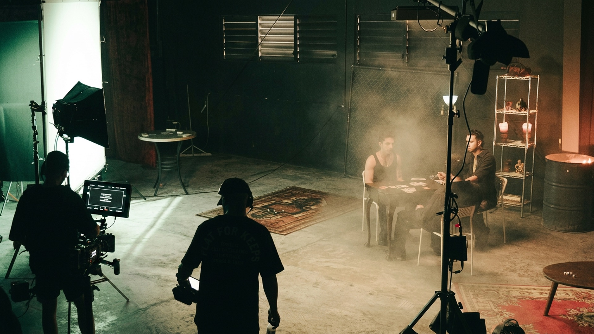
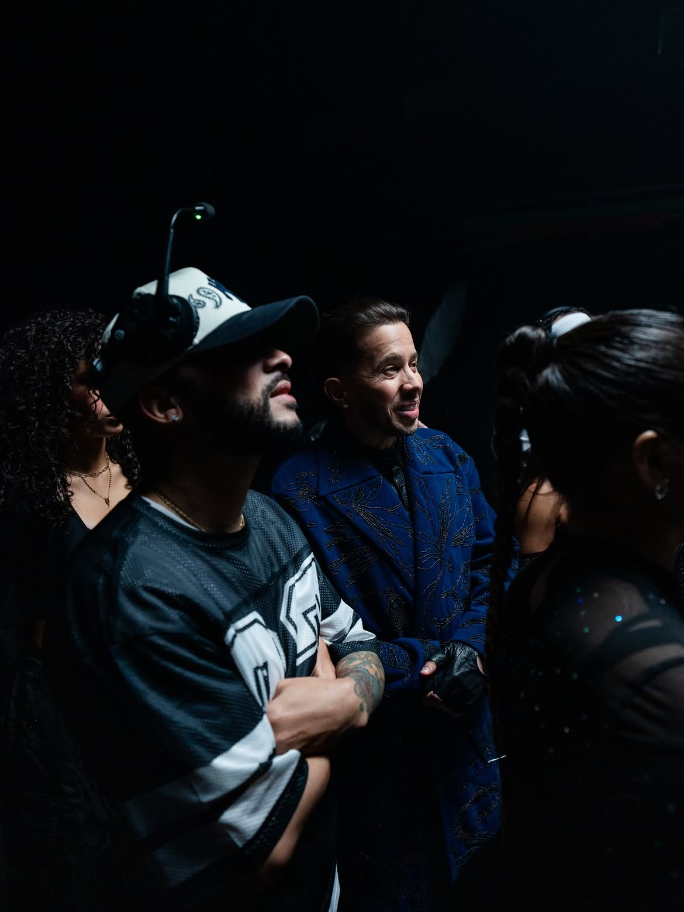
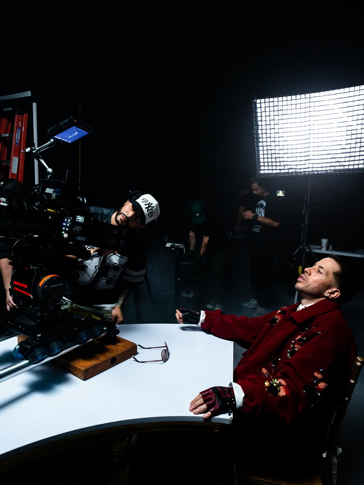
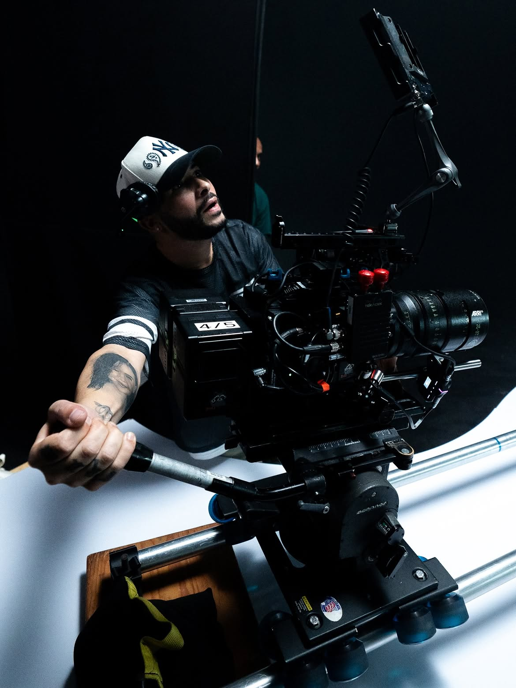
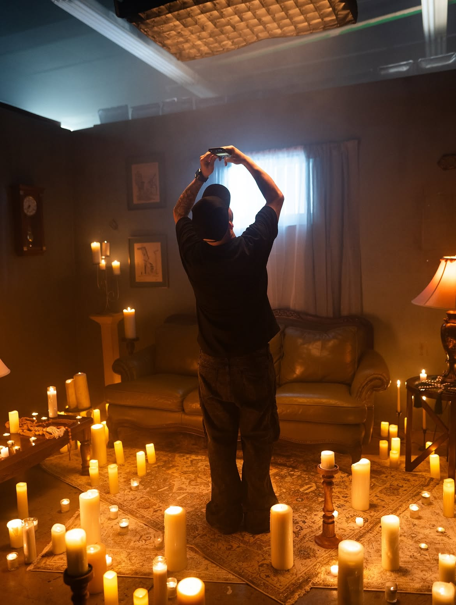
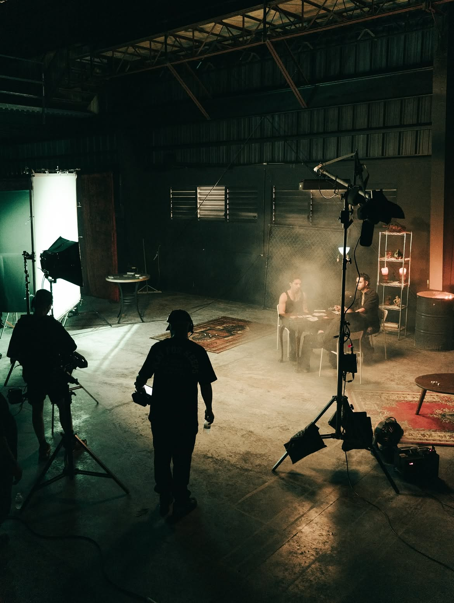

José Colón
VER IMG DETRÁS DE CÁMARAS —>Biography
José Colón es el fundador y director creativo de TruViews Media Group, con base en Toa Baja, Puerto Rico. Desde el inicio se ha formado dentro de la producción misma, en el set, cámara en mano — no desde la teoría.
Su enfoque combina la estética callejera más pura de la isla con los estándares técnicos y la narrativa del cine de gran escala, especializándose en traducir el ritmo, la crudeza y la energía del trap y el reggaetón en piezas visuales de alto calibre.
Clients
Ha colaborado con artistas como Anuel AA, Myke Towers, De La Ghetto, Luar La L y Jamby El Favo, dirigiendo BTS oficiales y videoclips de dirección propia para lanzamientos de alcance global — incluyendo "Vibra" junto a David Guetta.
Herramientas
RED Dragon Cinema y BlackMagic Pocket Cinema 6K. Cada pieza se trabaja bajo supervisión directa, garantizando texturas, iluminación y colorización de nivel cinematográfico en cada entrega.
Preproducción, Dirección de Fotografía, Cobertura On-Set (BTS) y Postproducción General — todo el proceso cubierto sin intermediarios.
[TRUVIEWS // TRV_031]
TRUVIEWS es un director y cineasta puertorriqueño especializado en la creación de contenido cinematográfico de alto impacto. Su trabajo se distingue por una narrativa visual poderosa, una estética cuidadosamente diseñada y una capacidad única para transformar la música y las historias en experiencias audiovisuales memorables.
A lo largo de su carrera ha dirigido videoclips, documentales, comerciales y proyectos de ficción para algunos de los artistas y marcas más reconocidos de la industria, desarrollando un estilo que fusiona el lenguaje del cine con la energía de la cultura urbana. Cada producción refleja una visión enfocada en la autenticidad, la emoción y el detalle cinematográfico.
Como fundador y director creativo de TRUVIEWS, lidera cada proyecto desde el desarrollo del concepto hasta la postproducción, supervisando dirección, fotografía, narrativa y acabado visual para garantizar una ejecución al más alto nivel.
Su trabajo lo ha llevado a filmar en múltiples países, colaborando con talentos internacionales y adaptándose a diferentes culturas y escenarios sin perder la esencia que caracteriza su firma visual. Más allá de crear imágenes impactantes, su objetivo es contar historias que conecten con la audiencia y permanezcan en la memoria.
Actualmente continúa expandiendo su trayectoria en el cine, la televisión, los documentales y la industria musical, consolidándose como una de las voces creativas de su generación y llevando la visión de TRUVIEWS a producciones cada vez más ambiciosas a nivel internacional.





Contact
[INICIAR PROYECTO // CUPO_LIMITADO]